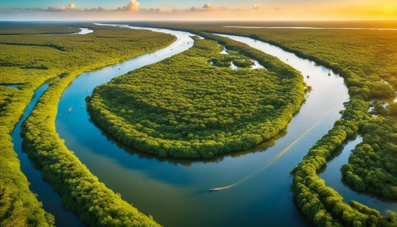
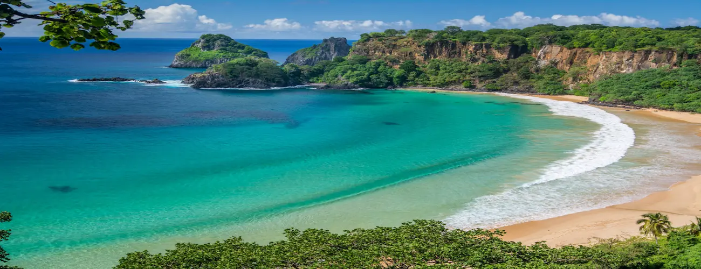
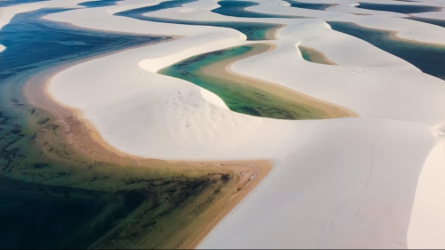
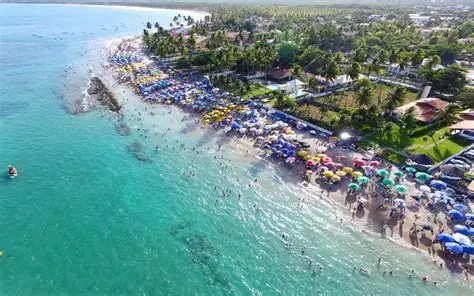
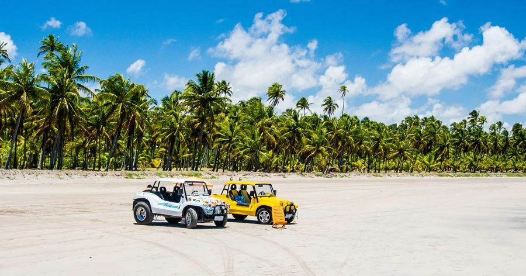
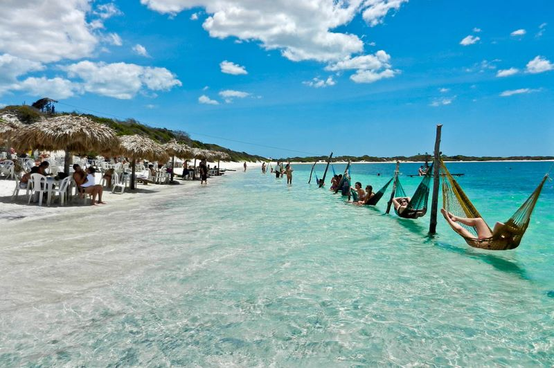
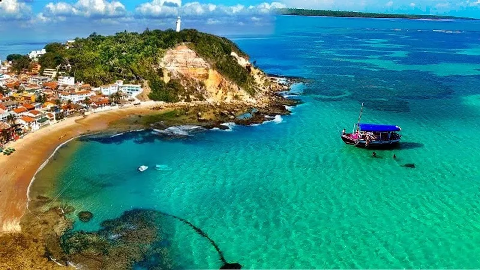

Delta do Parnaíba - PI/MA
O único Delta em mar aberto das Américas. São 85 ilhas, dunas, manguezais e a Revoada dos Guarás vermelhos no pôr do sol. Passeio de barco saindo de Tutóia ou Parnaíba. Turismo ecológico puro.

3.300 km de costa. Das piscinas de Porto de Galinhas ao único Delta em mar aberto das Américas.

O único Delta em mar aberto das Américas. São 85 ilhas, dunas, manguezais e a Revoada dos Guarás vermelhos no pôr do sol. Passeio de barco saindo de Tutóia ou Parnaíba. Turismo ecológico puro.

Deserto de areia branca com lagoas de água doce e cristalina entre as dunas. Melhor época: julho a setembro, quando as lagoas estão cheias. De Barreirinhas de 4x4.

Piscinas naturais mornas formadas pelos recifes. Na maré baixa, jangada até os peixinhos. À noite, vila agitada com lojinhas e forró.

As Galés a 6km da costa. Mergulho com snorkel em água transparente. Fica entre Maceió e Recife, perfeito pra bate e volta.

Ruas de areia, Lagoa do Paraíso e a famosa Pedra Furada. Wind e kite na Praia do Preá. Pôr do sol na Duna do Pôr do Sol é ritual diário.

Ilha sem carros em Tinharé. 4 praias numeradas, tirolesa e mirante. Travessia de lancha saindo de Salvador em 2h. Clima rústico-chique.
Junte tudo em uma viagem só: Lençóis Maranhenses (MA) → Delta do Parnaíba (PI) → Jericoacoara (CE). São 3 estados, 3 biomas e 500km de aventura de jipe, barco e buggy. A rota mais famosa do turismo no Nordeste.